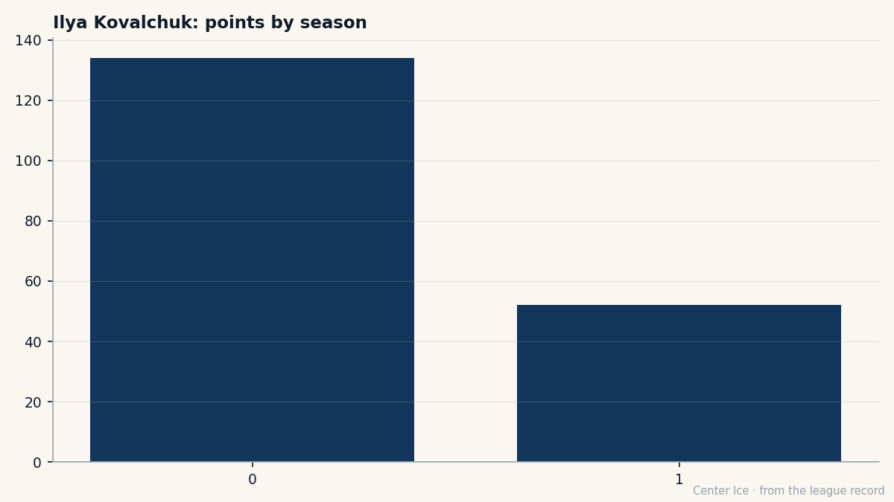

At 21, the best player on the worst team: the season Ilya Kovalchuk is carrying
52 points in 30 games, a 142 pace, the league's highest-rated man under 23. Around him, 18 losses and a goal differential that reads like a different sport. The loneliness of being the only good thing in a bad room.
 Carol BinghamFeatures writer · Rinkside
Carol BinghamFeatures writer · RinksideFifty-two points in 30 games. A 142 pace. The Book has  Ilya Kovalchuk89 at 91, five above his base, which means the scouts who see him on a Tuesday night in Atlanta are watching a player who is getting better. The scoreboard around him says 7-18-2. The
Ilya Kovalchuk89 at 91, five above his base, which means the scouts who see him on a Tuesday night in Atlanta are watching a player who is getting better. The scoreboard around him says 7-18-2. The  Atlanta Thrashers have scored 111 goals and allowed 132 in 30 games, a gap of 21 that 52 points will not close in a single season.
Atlanta Thrashers have scored 111 goals and allowed 132 in 30 games, a gap of 21 that 52 points will not close in a single season.
The best player in the league, by the Bureau's measure, on the worst team in the league, by the one that matters in April. He is 21. He was the first pick in 2001, a teenager with a glove hand and a stride that made scouts lean forward in their seats. Three years later the stride is still there. The goals are still coming: 22 of them this year, 30 assists, and a pace that puts him ahead of where he was at this point last season, when he finished with 134 in 82.

The numbers go up. The team does not. When you are the best player on a bad team, the ceiling is not the problem. The 18 losses are. You score twice, the other team scores three, and you sit in the locker room knowing the next game is the same. The 52 points are a fact and the 7 wins are a fact, and they do not add up to the same thing.
 Dany Heatley92 sits beside him in the scoring column with 49 points in 27 games, also 23 goals, also a first-round pick from 2000. Two young men with numbers that should mean something, in a building where the other 17 names on the roster are doing their best to make the 21-point deficit look smaller. The goal differential tells the real story in this room: 111 for, 132 against. The team gives up more than it scores, and individual production does not change that arithmetic.
Dany Heatley92 sits beside him in the scoring column with 49 points in 27 games, also 23 goals, also a first-round pick from 2000. Two young men with numbers that should mean something, in a building where the other 17 names on the roster are doing their best to make the 21-point deficit look smaller. The goal differential tells the real story in this room: 111 for, 132 against. The team gives up more than it scores, and individual production does not change that arithmetic.
Kovalchuk was 18 when he was drafted. He is 21 now, and the gap between those two numbers covers the whole story of what it means to be a number one pick who was right. The pick was right. The player is elite. The team around him is not.
The Book's potential grade is 85, which is high. The form is +5, the highest among the league's young men except for a handful who are on teams that are winning. Kovalchuk is getting better in a room that is not.
Last year, 134 points. This year, 52 in 30, a 142 pace. If the pace holds, he finishes around 140. The 22 goals in 30 games project to about 60 for the year, which is where the Braves were last year, and where they will be this year. That is not a playoff number.
He does not talk about it. There is no quote from him in this fortnight's record. The men who carry a team that cannot win do not talk about carrying. They show up, score, lose, and show up again. The 52 points are a fact: the best player in the league is 21, he is getting better, and the team around him is not.
The door holds. The streak is the room's. The room is 18 losses and a 21-goal deficit and a 7-18 record, and none of it will be fixed by a 142 pace.